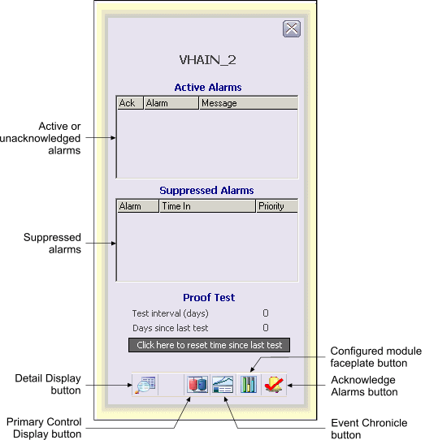

SIS HART device faceplate
The SIS HART Device faceplate, SIS_HARTDEV_fp contains active and suppressed alarm lists. The following shows an example of the SIS HART Device faceplate in run mode.

You can open the SIS HART Device faceplate in DeltaV Operate run mode by clicking a HART Device alarm button in the Alarm Banner or by clicking the Device Faceplate button on the Toolbar and typing the HART Device tag.
The following items are contained in the SIS HART Device faceplate:
Active or unacknowledged alarms – Contains the currently active or unacknowledged alarms along with the alarm message and an indicator that shows if the alarm has been acknowledged. You can right-click on an alarm to acknowledge or suppress it.
Suppressed Alarms list – Contains the alarms that are currently suppressed (either shelved, out of service or both) along with the time they were suppressed. You can right-click on an alarm to unshelve it or restore it to service.
Configured module faceplate button – Opens the module configured for this faceplate's area association. (Configured in DeltaV Explorer, in the SIS HART Device Properties dialog/Alarms and Displays tab.)
Proof Test area – Contains the following fields and controls:
Test interval (days): The configured number of days between scheduled proof tests.
Days since last test: The number of days since the last test was performed.
Click here to reset time since last test button: resets the Days since last test counter and the internal parameter that contains the absolute time of the last proof test.
Toolbar – Click a button to perform a task. The choices, from left to right, are:
Detail Display button: open the detail display for the HART Device if one has been defined.
Primary Control Display button: open the primary control display associated with the HART Device if one has been defined.
Event Chronicle button: open the Process History Viewer.
Configured module faceplate button: open the faceplate for the module selected for alarms and events association.
Acknowledge Alarms button: acknowledge all alarms in the HART Device.